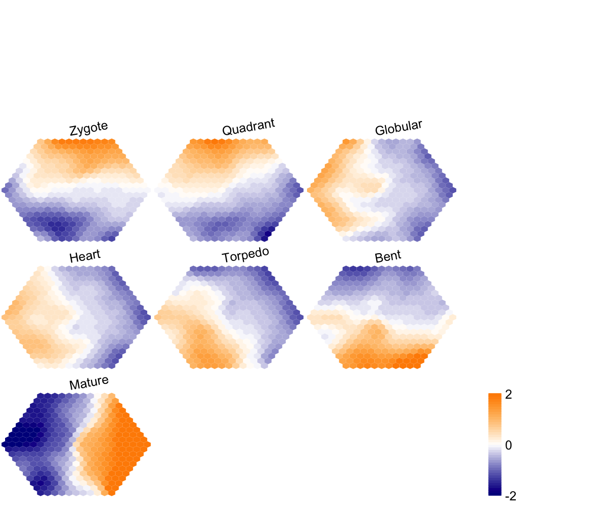

Start at 2016-06-24 11:46:15
First, define topology of a map grid (2016-06-24 11:46:15)...
Second, initialise the codebook matrix (331 X 7) using 'linear' initialisation, given a topology and input data (2016-06-24 11:46:15)...
Third, get training at the rough stage (2016-06-24 11:46:15)...
1 out of 2 (2016-06-24 11:46:15)
updated (2016-06-24 11:46:15)
2 out of 2 (2016-06-24 11:46:15)
updated (2016-06-24 11:46:15)
Fourth, get training at the finetune stage (2016-06-24 11:46:15)...
1 out of 4 (2016-06-24 11:46:15)
updated (2016-06-24 11:46:15)
2 out of 4 (2016-06-24 11:46:15)
updated (2016-06-24 11:46:15)
3 out of 4 (2016-06-24 11:46:15)
updated (2016-06-24 11:46:16)
4 out of 4 (2016-06-24 11:46:16)
updated (2016-06-24 11:46:16)
Next, identify the best-matching hexagon/rectangle for the input data (2016-06-24 11:46:16)...
Finally, append the response data (hits and mqe) into the sMap object (2016-06-24 11:46:16)...
Below are the summaries of the training results:
dimension of input data: 3625x7
xy-dimension of map grid: xdim=21, ydim=21
grid lattice: hexa
grid shape: suprahex
dimension of grid coord: 331x2
initialisation method: linear
dimension of codebook matrix: 331x7
mean quantization error: 0.608378171168446
Below are the details of trainology:
training algorithm: batch
alpha type: invert
training neighborhood kernel: gaussian
trainlength (x input data length): 2 at rough stage; 4 at finetune stage
radius (at rough stage): from 6 to 1.5
radius (at finetune stage): from 1.5 to 1
End at 2016-06-24 11:46:16
Runtime in total is: 1 secs

## As you have seen, a figure displays the multiple components of trained map in a sample-specific manner. You also see that a .txt file has been saved in your disk. The output file has 1st column for your input data ID (an integer; otherwise the row names of input data matrix), and 2nd column for the corresponding index of best-matching hexagons (i.e. gene clusters). You can also force the input data to be output; type ?
sWriteData for details.
# (III) Visualise the map, including built-in indexes, data hits/distributions, distance between map nodes, and codebook matrix
visHexMapping(sMap, mappingType="indexes")
## As you have seen, the smaller hexagons in the supra-hexagonal map are indexed as follows: start from the center, and then expand circularly outwards, and for each circle increase in an anti-clock order.
visHexMapping(sMap, mappingType="hits")
## As you have seen, the number represents how many input data vectors are hitting each hexagon, the size of which is proportional to the number of hits.
visHexMapping(sMap, mappingType="dist")
## As you have seen, map distance tells how far each hexagon is away from its neighbors, and the size of each hexagon is proportional to this distance.
visHexPattern(sMap, plotType="lines")
## As you have seen, line plot displays the patterns associated with the codebook matrix. If multple colors are given, the points are also plotted. When the pattern involves both positive and negative values, zero horizental line is also shown.
visHexPattern(sMap, plotType="bars",colormap="rainbow",legend.cex=0.5)
## As you have seen, bar plot displays the patterns associated with the codebook matrix. When the pattern involves both positive and negative values, the zero horizental line is in the middle of the hexagon; otherwise at the top of the hexagon for all negative values, and at the bottom for all positive values.
# (IV) Perform partitioning operation on the map to obtain continuous clusters (i.e. gene meta-clusters) as they are different from gene clusters in an individual map node
sBase <-
sDmatCluster(sMap, reindexSeed="svd")
){kind=link}
){kind=link}
){kind=link}
){kind=link}
){kind=link}